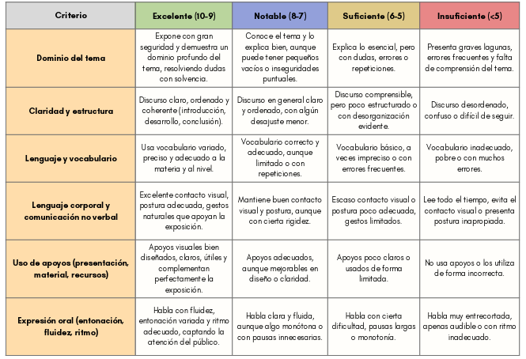
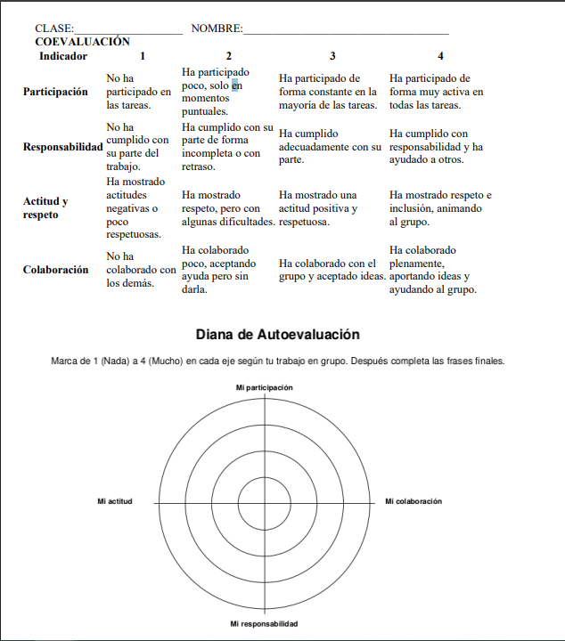

Guía didáctica
PCT Competencia matemática
La participación del IES Azahar durante el curso 25/26 en el Programa de Cooperación Territorial Competencia matemática se plantea como una oportunidad de mejora y consolidación de las acciones ya iniciadas en cursos anteriores para mejorar la competencia matemática del alumnado, promoviendo prácticas docentes inclusivas, colaborativas y coherentes con los principios del Diseño Universal para el Aprendizaje (DUA) y con los objetivos del PCT.
1.- Situación de partida.
El IES Azahar forma parte de la Red de Centros para el Refuerzo de la Competencia Matemática de la Junta de Andalucía, a raíz de los resultados del diagnóstico de 2023/2024. Es un centro de compensación educativa con alumnado de nivel socioeconómico medio-bajo y necesidades diversas, lo que exige metodologías activas e inclusivas.Para mejorar el nivel matemático, el centro puso en marcha el Plan de Fomento del Razonamiento Matemático, centrado en la resolución de problemas como eje principal del aprendizaje, que se articula en torno a los siguientes objetivos específicos:
- Considerar la resolución de problemas como base para el desarrollo del razonamiento lógico e hipotético-deductivo.
- Definir y unificar los procesos implicados en la resolución de problemas, para ofrecer al alumnado una metodología coherente y estructurada.
- Especificar las estrategias de resolución más adecuadas a cada etapa y tipología de problema.
- Coordinar los distintos departamentos del centro para fomentar el razonamiento matemático desde un enfoque interdisciplinar.
- Proponer actividades interdisciplinares que integren las matemáticas en contextos reales, a través de proyectos STEAM o mediante la aplicación del Diseño Universal para el Aprendizaje (DUA).
2.- Finalidad del proyecto
Durante el presente curso, nos sumanos al PCT Competencia matemática con la finalidad de reforzar la competencia matemática del alumnado del IES Azahar, a través de la modalidad de Formación en Centros, promoviendo el desarrollo profesional del profesorado y la incorporación de medidas organizativas y pedagógicas en el Plan de Mejora del centro. Con ello se pretende generar un impacto real y sostenible en los resultados académicos y en la calidad del proceso de enseñanza-aprendizaje.
Con este propósito se persigue actuar de manera coordinada en distintos niveles:
- A nivel externo: consolidar una red de centros comprometidos con la mejora continua, en coherencia con los objetivos establecidos por la Consejería de Desarrollo Educativo y Formación Profesional y la Dirección General de Ordenación y Evaluación Educativa, favoreciendo el intercambio de buenas prácticas y la colaboración entre centros.
- A nivel de centro: establecer una línea de trabajo conjunta que, en el marco del PCT, oriente las actuaciones hacia la mejora de los resultados en competencia matemática y lectora, asegurando su sostenibilidad e inclusión en el Plan de Mejora y en el Proyecto Educativo de Centro.
- A nivel del profesorado: generar un proceso formativo compartido, basado en la reflexión sobre la práctica docente, el codiseño de propuestas metodológicas y el análisis de evidencias, que contribuya a fortalecer la cultura evaluativa y el trabajo colaborativo entre los distintos departamentos.
- A nivel del alumnado: garantizar aprendizajes más significativos, motivadores e inclusivos, que incrementen el rendimiento, la participación y la confianza del alumnado en ambas competencias, con especial atención a la reducción de la brecha de género y a la atención a la diversidad.
En definitiva, el proyecto persigue mejorar el desempeño competencial del alumnado, potenciar la formación docente continua, y promover una transformación metodológica y organizativa que permita avanzar hacia un modelo educativo más equitativo, eficaz e integrador.
El objetivo principal del PCT es aumentar el rendimiento del alumnado en las pruebas de diagnóstico en competencia matemática en los próximos cursos, así como mejorar el nivel de desempeño general en esta competencia clave, contribuyendo al desarrollo integral del alumnado y al éxito educativo de todo el centro.
En coherencia se establecen los siguientes objetivos generales y específicos:
Objetivo 1. Atender al alumnado de manera personalizada
Este objetivo persigue que el profesorado desarrolle estrategias que permitan dar respuesta a la diversidad de ritmos y necesidades del alumnado en matemáticas, favoreciendo que todo el alumnado progrese desde su punto de partida.
Objetivo específico:
- Incorporar los principios del Diseño Universal para el Aprendizaje (DUA) en la planificación de tareas para garantizar la accesibilidad y la equidad.
Objetivo 2. Trabajar la brecha de género en la competencia matemática
Este objetivo busca que el centro analice y actúe sobre las diferencias de género que puedan existir en los aprendizajes, promoviendo la igualdad de oportunidades y la participación equitativa del alumnado.
Objetivo específico:
- Analizar si existe brecha de género en el centro.
Objetivo 3. Establecer e implementar medidas organizativas que refuercen la competencia matemática
Este objetivo implica introducir medidas organizativas que faciliten el desarrollo de ambas competencias desde una perspectiva transversal, coordinada y sostenible.
Objetivo específico:
- Apoyar las medidas organizativas del centro, potenciando modelos de codocencia y grupos reducidos que favorezcan la atención a la diversidad.
Objetivo 4. Desarrollar planes de mejora y estrategias metodológicas y de evaluación que favorezcan la competencia matemática
Este objetivo orienta el trabajo hacia la concreción en el Plan de Mejora de actuaciones que refuercen las dos competencias clave, garantizando la coherencia entre el diagnóstico inicial, los objetivos marcados y las acciones desarrolladas.
Objetivos específicos:
- Concienciar al profesorado de que la competencia matemática debe trabajarse de forma transversal en todas las materias del currículo.
- Difundir y promover estrategias metodológicas innovadoras que favorezcan la mejora de la competencia matemática en los distintos niveles de la ESO.
PCT Escuela Código 4.0
Este Programa de cooperación territorial se implementa en Andalucía a través de la puesta en marcha de los Proyectos STEAM 4.0 como queda recogido en la Resolución de 1 de agosto de 2025, de la Dirección General de Innovación y Formación del Profesorado, sobre medidas para el impulso de la Competencia Digital en los centros docentes sostenidos con fondos públicos en el Marco del Programa de Cooperación Territorial Código Escuela 4.0 (Junta de Andalucía, 2025).
Con el fin de facilitar la integración curricular del Proyecto STEAM 4.0 en las programaciones didácticas y en el Proyecto Educativo de Centro, se realiza la vinculación curricular de las distintas áreas o materias de la etapa educativa correspondiente, en coherencia con el perfil de salida STEAM.
De este modo, se facilita la planificación de propuestas didácticas que integren la competencia digital y fomenten el enfoque STEAM, favoreciendo una enseñanza más significativa, interdisciplinar e innovadora.
Objetivos del Proyecto STEAM 4.0
- Promover iniciativas STEAM (Ciencia, Tecnología, Ingeniería, Arte y Matemáticas) que impulsen la innovación, la creatividad, la sostenibilidad y la robótica educativa.
- Desarrollar desde edades tempranas la competencia digital y el interés por la cultura científico-tecnológica.
- Incorporar en el aula tecnologías emergentes como la inteligencia artificial, el análisis de datos, la programación, la impresión 3D o el Internet de las Cosas (IoT).
- Promover una mirada crítica a los retos que plantea la tecnología y su sostenibilidad.
- Facilitar al profesorado formación específica y recursos digitales que apoyen su práctica docente.
- Fomentar la participación de los centros educativos en proyectos y retos prácticos, colaborativos e interdisciplinares.
Referencias curriculares
- Mediante esta situación de aprendizaje se desarrollan las competencias específicas y saberes básicos descritos en el Orden de 30 de mayo de 2023, por el que se establece el currículo, la atención a la diversidad y la evaluación en Andalucía para la Educación Secundaria Obligatoria.
- Para Formación Profesional se ha tenido en cuenta el Decreto 147/2025, de 17 de septiembre que establece la ordenación de las enseñanzas de los Grados D (Ciclos Formativos de Grado Básico, Medio y Superior) y Grados E (Cursos de Especialización) en Andalucía.
Metodología
Este conjunto de proyectos refleja una apuesta clara del centro por metodologías activas, inclusivas y competenciales, en las que el alumnado es protagonista de su propio aprendizaje. A través del trabajo colaborativo entre departamentos, la integración de las matemáticas en diferentes contextos y el enfoque interdisciplinar propio de la metodología STEAM (Ciencia, Tecnología, Ingeniería, Arte y Matemáticas), se busca no solo mejorar los resultados académicos, sino también fomentar una comprensión más profunda, útil y motivadora de las matemáticas.
El diseño del proyecto se fundamentará en dinámicas de colaboración docente propias de la modalidad de Formación en Centros (PCT), fomentando la reflexión conjunta, la toma de decisiones compartida y la transferencia directa a la práctica en el aula. La metodología se centrará en el trabajo colaborativo, la innovación educativa y la mejora continua de las competencias del alumnado.
Las principales líneas metodológicas en el diseño de esta proyecto serán las siguientes:
- Trabajo en equipo docente interdepartamental y de ciclo, para integrar la competencia matemática de forma transversal en todas las áreas y niveles educativos.
- Sesiones de codiseño y planificación conjunta, donde el profesorado elabore y comparta materiales, tareas y actividades competenciales, adaptadas a los distintos niveles de desempeño del alumnado.
- Formación presencial y acompañamiento externo, con sesiones dirigidas por expertos del CEP de Sevilla, para fortalecer competencias metodológicas y didácticas.
- Integración de recursos digitales y entornos virtuales de colaboración, facilitando el acceso a materiales, la comunicación entre docentes y la documentación de evidencias de aprendizaje.
Para el alumnado la metodología empleada es activa, práctica y basada en proyectos, situando al alumnado como protagonista de su propio aprendizaje.
¿Qué tipo de actividades de Enseñanza-Aprendizaje nos encontraremos?
Se combinan actividades con diferentes estrategias metodológicas:
- Aprendizaje basado en proyectos (ABP), trabajando sobre una situación real con aplicación directa que favorece la adquisición de conocimientos de manera significativa.
- Aprendizaje práctico, mediante la elaboración de tablas, cálculos y gráficos en entornos analógicos o digitales.
- Resolución de problemas reales (presupuestos, costes, análisis de datos).
¿Cómo organizaremos el trabajo?
- Trabajo cooperativo, favoreciendo la organización, el reparto de tareas, la responsabilidad individual dentro del grupo y la toma de decisiones conjunta.
- Aprendizaje colaborativo trabajando a partir de un proyecto común de forma interdisciplinar, dividiendo cada clase en grupos de 4 o 5 miembros según número total de alumnado.
Rol del profesorado
El profesorado actúa como guía y facilitador, proporcionando las herramientas necesarias y acompañando al alumnado en el proceso, favoreciendo la autonomía progresiva.
Esta situación de aprendizaje se ha diseñado procurando que sea lo más accesible posible, y cumplir con los principios y pautas del Diseño Universal para el Aprendizaje. Pulsa abajo para saber más.
Diseño universal de aprendizaje
Incluimos a continuación los principales indicadores del DUA que hemos aplicado. Pulsar en ellos para desplegar.
 Redes afectivas. Implicamos al alumnado en el aprendizaje.
Redes afectivas. Implicamos al alumnado en el aprendizaje.
- Se han incluido actividades contextualizadas a la vida real del alumnado, como por ejemplo en la actividad "Mensajes felices"
- Hay actividades donde el alumnado puede participar en su diseño y establecimiento de objetivos; en el diseño y desarrollo del Podcast aparece presente.
- Se fomenta la reflexión y la evaluación por parte del alumnado continuamente a lo largo de todo el recurso.
- Hay actividades con retroalimentación sobre aciertos y errores, así como sugerencias de mejora...
- Propiciamos un clima favorable en clase de respeto y reconocimiento de emociones en uno mismo y en los demás.
 Redes de conocimiento. Presentamos la información en varios formatos.
Redes de conocimiento. Presentamos la información en varios formatos.
- Se han previsto diferentes formas para mostrar la información al alumnado, como texto, vídeo... esto lo podemos ver a lo largo de todo el recurso con el empleo de imágenes alusivas a los diferentes cuentos, enlaces a vídeos de youtube con el cuento para que puedan escucharlo e incluso verlo, enlaces a canciones...
- Para facilitar la comprensión, hemos incluido imágenes y texto fáciles de entender.
- Las actividades están secuenciadas en orden de dificultad creciente, y están pensadas para facilitar la comprensión de los puntos teóricos y la realización de las tareas finales.
 Redes estratégicas. Se proporcionan formas diferentes para aprender y expresar lo aprendido.
Redes estratégicas. Se proporcionan formas diferentes para aprender y expresar lo aprendido.
- Ofrecemos al alumnado diferentes formas de mostrar lo aprendido a través de la expresión oral, escrita e incluso a través del dibujo.
- Damos estrategias para que el alumnado autorregule su aprendizaje. Por ejemplo, en la sección "Nos organizamos" ofrecemos una lista de cotejo con las actividades del REA.
- Combinamos actividades individuales con agrupadas que favorezcan el aprendizaje entre iguales.
- Indicamos los tiempos aproximados de ejecución de las tareas y del REA, que pueden flexibilizarse.
Implica desarrollar el pensamiento crítico, la curiosidad, la creatividad y la capacidad de aprender a lo largo de la vida.
Implica desarrollar habilidades prácticas, técnicas y profesionales que permitan actuar en diferentes contextos y situaciones.
Implica desarrollar la identidad personal, los valores, la autoestima, la autonomía y la responsabilidad.
Implica desarrollar la convivencia, el respeto, la tolerancia, la solidaridad y la cooperación
Propuesta de Evaluación
A lo largo de todo el proceso se realiza una evaluación formativa y formadora que nos permite recoger, tanto al alumnado como al profesorado, información del proceso de enseñanza y aprendizaje y modificar, incorporar o reorganizar las actividades y el tiempo lectivo para poder atender a las necesidades del alumnado. De la misma forma, utilizando las mismas escalas de valoración, el propio alumno/a puede autoevaluarse, reflexionar sobre su aprendizaje y ofrecer o solicitar ayuda entre iguales, incorporando así elementos metacognitivos para hacerse consciente de sus logros y dificultades.
Se valora tanto el trabajo en grupo como el individual. En este sentido son también importantes las observaciones in situ que pueda hacer el docente mientras se desarrolla el trabajo en equipo.
La propuesta evalúa competencias educativas y cumple con todos los criterios de evaluación de los bloques curriculares trabajados. Los instrumentos de evaluación que se proponen se emplean para:
- Evaluaciones docentes
- Autoevaluación del propio alumnado
- Coevaluación entre grupos
- Reflexión del aprendizaje
1.- Escalas de valoración para actividades científicas:
Estas escalas se pueden usar en el momento que el profesor o profesora considere más oportuno. Además, si el docente ve necesario evaluar alguna de las actividades más en concreto, puede usar las siguientes escalas, empleadas en otros REA de ciencias en actividades similares:
- Escala de valoración para una actividad escrita en ciencias
- Escala de valoración para un informe escrito científico
- Escala de valoración de una lectura científica
- Escala genérica de valoración de debates sobre ciencia
- Escala de valoración de una exposición oral sobre Ciencias
2.-Al término de cada bloque de tareas se propone también un momento de reflexión para facilitar una retroalimentación más efectiva y avanzar con seguridad hacia la consecución de las competencias previstas. Al finalizar el proyecto se hace una reflexión más completa.
3.- Al ser un proyecto basado en el aprendizaje cooperativo, al finalizarlo se hace también una evaluación del funcionamiento del equipo, de cara a la mejora y a una propuesta de un posible trabajo de recuperación. En la presentación del producto final, se propone una coevaluación del mismo por parte de los equipos que se indica en la tarea.
4.- Se puede valorar de forma individual con rúbricas específicas las diferentes tareas. El docente asignará las puntuaciones y proporciones a cada tarea.
Como es una propuesta modificable, el profesorado puede integrarla en otra más o menos amplia, donde también tendrán cabida otras pruebas de evaluación u otros trabajos o producciones que puedan realizarse durante la secuencia didáctica.
Instrumentos
A continuación algunos instrumentos concretos utilizados en este proyecto:
Primer ciclo de la ESO: El ciclo del Agua
Rúbrica exposición oral (1° ESO):
Auto y coevaluación (2° ESO):
